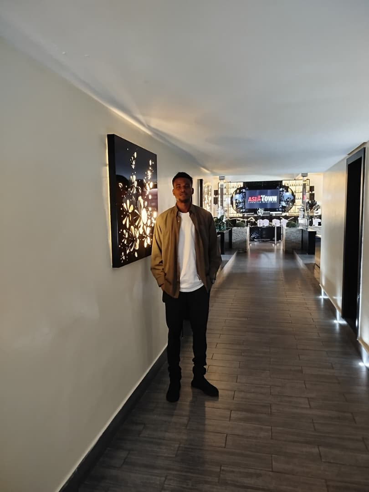
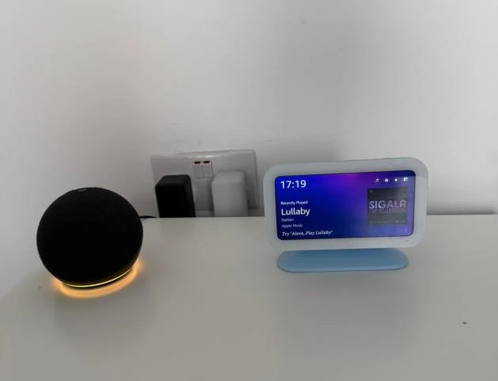

Digital Forensics & Cyber Investigations
Digital evidence.
Beyond the surface.
Exploring the intersection of digital forensics, cyber investigations and emerging connected technologies through structured investigation and evidence-led research.
SOC Analyst · Threat intelligence & vulnerability management
Detect. Triage.
Respond.
Threat profiling, phishing analysis and vulnerability remediation, written up with evidence, confidence levels and clear next steps.
Electrical Engineering · High-voltage systems
Power systems.
Built safely.
Electrical engineer with over three years in high-voltage transmission: design and installation, fault diagnosis, technical reporting and safety compliance.

Understanding the evidence behind digital activity.
This portfolio collects four practical investigations carried out as academic forensic case studies. Each starts from a question, works through acquisition and examination, and ends with what the evidence supports and where it stops.
The work spans a seized-computer scenario with a reconstructed RAID set, a comparison of Snapchat artefacts on Android and iOS, residual traces left by a private-browsing session, and cloud-hosted evidence from Amazon Echo devices obtained through a GDPR Subject Access Request.
Throughout, findings are labelled by how strongly the evidence supports them, and limitations are stated next to the results they affect.
Turning alerts and artefacts into decisions.
Three training projects cover the day-to-day questions of a SOC: what is this file, is this email malicious, and did the fix actually work.
One is a threat profile of a ransomware sample, with indicators, ATT&CK mapping and a detection rule. One is the triage of an invoice-fraud email. One is a vulnerability fix on a lab server, done with a tested Ansible playbook and proved with a re-scan.
Each states its confidence, separates what was seen from what was reported, and lists what is still open.
Safe, reliable high-voltage systems.
Over three years of work on high-voltage transmission lines and transformers, from planning and installation to fault diagnosis and routine inspection.
Earlier work with a contractor and senior engineers covered electrical installations and residential wiring, including hands-on experience with a 500 kVA transformer.
Across both roles the emphasis was the same: work that meets the project need, follows safety regulations and is documented clearly.
Four investigations, one method.
Filter by discipline. Each case study follows the same structure, from the original question to limitations.
4 investigations shown

Amazon Alexa IoT Forensics
Cloud-based evidence acquisition and artefact interpretation across an Echo Dot and an Echo Show, using Amazon's GDPR Subject Access Request. The comparison shows that cross-device analysis gives a fuller picture than either device alone.
Advanced Forensic Computing
Four disk images rebuilt into one, then a Windows drive examined through registry hives, shellbags, LNK files and jump lists, with key items checked in hexadecimal.
Mobile Application Forensics
A comparison of Snapchat artefacts on a Samsung Galaxy S20+ and an iPhone, with hash checks before and after examination.
UC Browser Forensics
Normal and incognito browsing in a controlled Windows 10 virtual machine, then imaged and examined for history, cookies, cache and carved fragments.
Three projects, one habit: show the evidence.
Training exercises in threat intelligence, email analysis and vulnerability management. Each lists its limits and open items.
DarkSide Ransomware Threat Profile
A 32-bit Windows DLL profiled from detection, sandbox and published data: lifecycle, indicators, ATT&CK mapping, a YARA rule and six actions. Draft v1.0.
nginx Remediation with Ansible
A source-built nginx upgraded from 1.15.5 to 1.30.4 with a dry-run-first playbook and a tested rollback, then checked with an OpenVAS re-scan.
Invoice Fraud Phishing Analysis
A suspected invoice-fraud email triaged through headers, SPF, DKIM and DMARC, sender identity, links, tracking pixel and a disguised attachment.
Two employers, one discipline.
Work on transmission lines, transformers and electrical installations.
Transmission Company of Nigeria
December 2022 to June 2024 · [JOB TITLE]
- Worked with engineering teams on new transmission lines: material and equipment selection, site surveys and route choice.
- Diagnosed faults on lines and transformers with grounding cables, thermal cameras and fault locators.
- Wrote technical reports on maintenance and repairs, and helped plan budgets and schedules for new projects.
- Enforced safety regulations and protective equipment use, and carried out routine inspections of lines and transformers.
Vitek Engineering Company
December 2019 to November 2022 · [JOB TITLE]
- Planned and carried out installations with contractors and senior engineers, safely and on schedule.
- Assisted a licensed electrical company with residential wiring, to code.
- Installed, maintained and repaired electrical systems, including a 500 kVA transformer.
Disciplines practised.
Each area is backed by an investigation in this portfolio. See Skills for the tools involved.
Computer Forensics
Disk imaging, RAID reconstruction, registry hives and Windows user-activity artefacts.
Mobile Forensics
Full file system examination of Android and iOS, and Snapchat application databases.
Browser Forensics
History databases, cookies, cache, and carved URL fragments in a private-browsing scenario.
IoT Forensics
Telemetry and behavioural artefacts from consumer smart-home devices.
Cloud Forensics
Evidence obtained through official data access requests, and the limits of that route.
Digital Evidence Analysis
Cross-tool verification, artefact correlation and separating findings from interpretation.
Disciplines practised.
Each area is backed by one of the three SOC projects. See Skills for the tools involved.
Threat Intelligence
Classifying a sample, mapping it to ATT&CK and stating confidence in each judgement.
Phishing Analysis
Headers, SPF, DKIM and DMARC, sender identity, links, pixels and attachments.
Vulnerability Management
Baseline scans, patching with Ansible, rollback planning and re-scan verification.
Malware Triage
Static metadata, section entropy, sandbox behaviour and indicators from a ransomware DLL.
Detection Logic
A structural YARA rule built where verified strings were not available.
Incident Reporting
Prioritised recommendations, defanged IOCs and open items stated openly.
Disciplines practised.
Drawn from work on transmission lines, transformers and installations.
Transmission Lines
Design and installation of new high-voltage lines, including material selection and site surveys.
Fault Diagnosis
Locating faults on lines and transformers using grounding cables, thermal cameras and fault locators.
Technical Reporting
Detailed reports on maintenance and repairs that explain what was done and why.
Project Planning
Budgeting and scheduling for new transmission projects.
Safety Compliance
Regulations followed and protective equipment required for everyone on site.
Routine Maintenance
Regular inspection of high-voltage lines and transformers to catch problems early.
Evidence requires process.
Select a stage to read how it is approached.
A general investigative framework. It describes the approach across this portfolio, and does not claim that every project followed identical procedures. For example, the Alexa data came from a data access request, so no disk image or hash could be made.
From a raw artefact to a verified outcome.
Select a stage to read how the three SOC projects were approached.
A summary of the approach across the three training projects. It does not claim to describe a production SOC workflow.
How digital activity leaves a trace.Evidence first, then the call.Engineering that keeps the lights on.
Name and background details are placeholders to complete.
placeholder
[YOUR FULL PROFESSIONAL NAME]
I am interested in understanding how digital activity can be reconstructed from the traces left across devices, applications and connected environments.
My work explores computer, mobile, browser and IoT forensics, with an emphasis on evidence acquisition, artefact examination and structured investigative analysis.
Through research and practical forensic investigations, I explore the relationship between digital evidence, technology and investigative decision-making.
I approach security analysis the way I approach fault-finding: establish what is actually happening, check it against a second source, and write it down so someone else can follow.
My SOC-focused work so far covers threat intelligence, phishing triage and vulnerability remediation, all as training exercises, each with confidence levels and open items stated.
I am building on a digital forensics MSc and a background in high-voltage engineering.
I am a meticulous electrical engineer with over three years of experience in high-voltage electrical systems, committed to high-quality work that is safe and meets regulations.
I want to expand my technical expertise and gain international experience in problem-solving as an electrician or engineer.
Alongside this I am studying digital forensics and cyber investigation, which is covered in the other views of this portfolio.
Areas of interest
- IoT and cloud evidence
- Windows user-activity artefacts
- Mobile application databases
- Evidence interpretation and limits
Investigation domains
- Computer and Windows forensics
- Mobile device forensics
- Browser and internet forensics
- IoT and cloud forensics
Areas of interest
- Threat intelligence
- Phishing and BEC triage
- Vulnerability remediation
- Detection logic
Project domains
- Malware triage
- Email analysis
- Patch management with Ansible
- ATT&CK mapping
Areas of strength
- High-voltage transmission
- Fault diagnosis and repair
- Installations and wiring
- Technical reports
Memberships
- Nigerian Society of Engineers (NSE)
- International Association of Engineers (IAENG)
Academic background
- MSc Digital Forensics and Cyber Investigations [INSTITUTION · DATES]
- BEng Electrical/Electronics [INSTITUTION · YEAR]
Location
- [LOCATION]
The case studies here were completed as academic or training work. They are presented as research and assessment exercises with simulated scenarios.
What was used, and how.
Select a tool to see how it was applied in these investigations. No proficiency ratings are claimed.
Computer Forensics
Examining disks, registry hives and Windows artefacts.
Mobile Forensics
Android and iOS application artefacts.
Browser and Internet Forensics
Residual traces of web activity.
IoT and Cloud Forensics
Evidence from consumer devices and cloud exports.
Technical Methods
Practices applied across investigations.
What was used, and how.
Select a tool to see how it was applied in the SOC projects. No proficiency ratings are claimed.
Threat Intelligence
Profiling a ransomware sample.
Detection
Turning findings into rules.
Email and Phishing Analysis
Triage of a suspected invoice-fraud message.
Vulnerability Management
Fix, prove and be able to undo.
What was used, and how.
Select an item to see where it was used. Drawn from the CV, with no proficiency ratings claimed.
Transmission
High-voltage lines and transformers.
Diagnostics and Tools
Finding faults quickly.
Installation and Wiring
Safe, code-compliant installation.
Planning, Reporting and Safety
The work around the work.
Have an investigation, research opportunity or technical collaboration in mind?
- [PROFESSIONAL EMAIL]
- [LINKEDIN URL]
- GitHub
- [GITHUB URL]
- Location
- [LOCATION]
Form checked. Nothing was sent.
This form is not connected to a submission service yet. Use the email address above in the meantime.